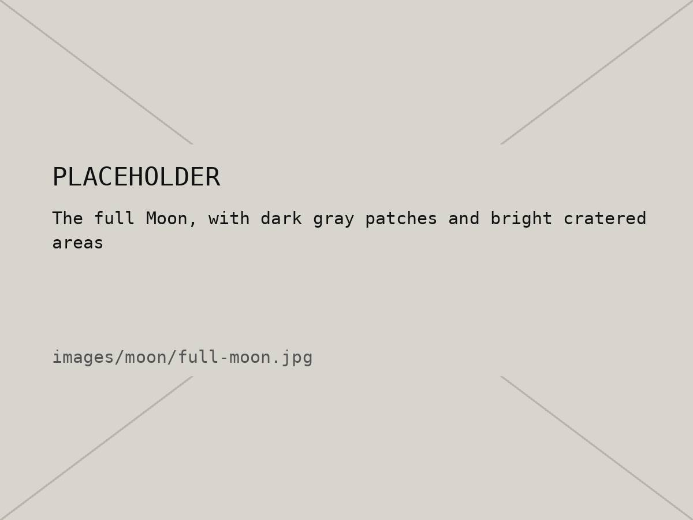
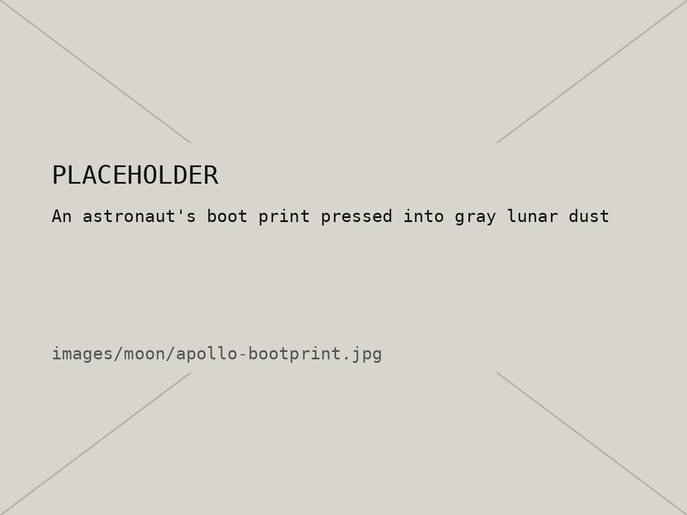

05 / 10 — Earth's moon
The Moon
Earth's only natural satellite, and the only other world people have walked on.
01 — Intro
The Moon is about a quarter as wide as Earth and sits roughly 384,000 km away. Most scientists think it formed when something about the size of Mars slammed into the young Earth and threw a ton of debris into orbit, which eventually clumped together.
The same side always faces us, so we only ever see one “face.” The phases happen because, as it orbits, we see different amounts of its sunlit half. Its gravity also pulls on the oceans, and that's what causes the tides.
02 — Quick facts
| Distance from Earth | About 384,400 km |
|---|---|
| Diameter | 3,475 km (about ¼ of Earth) |
| Gravity | About 1/6 of Earth's |
| Time to orbit Earth | About 27.3 days |
| Full cycle of phases | About 29.5 days |
| People who walked on it | 12 (Apollo, 1969–1972) |
03 — Images


04 — Phase viewer
Step through the eight phases. The drawing is made with code, not a photo.
New Moon